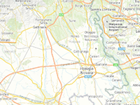

Inertia

Example of how to make the inertia, when you move the map.
Usage instructions:
Add this script to map GameObject and start the scene.
Drag the map to see the inertia.
Add this script to map GameObject and start the scene.
Drag the map to see the inertia.
InertiaExample.cs
/* INFINITY CODE 2013-2019 */
/* http://www.infinity-code.com */
using System;
using System.Collections.Generic;
using System.Linq;
using UnityEngine;
namespace InfinityCode.OnlineMapsExamples
{
/// <summary>
/// Example of how to make the inertia, when you move the map.
/// </summary>
[AddComponentMenu("Infinity Code/Online Maps/Examples (API Usage)/InertiaExample")]
public class InertiaExample : MonoBehaviour
{
/// <summary>
/// Deceleration rate (0 - 1).
/// </summary>
public float friction = 0.9f;
private bool isInteract;
private List<double> speedX;
private List<double> speedY;
private double rsX;
private double rsY;
private double ptx;
private double pty;
private const int maxSamples = 5;
private bool isSmoothZoomProceed;
private bool waitZeroTouches;
private OnlineMaps map;
private OnlineMapsControlBase control;
private void FixedUpdate()
{
if (isSmoothZoomProceed || waitZeroTouches) return;
// If there is interaction with the map.
if (isInteract)
{
// Calculates speeds.
double tx, ty;
map.GetTilePosition(out tx, out ty);
double cSpeedX = tx - ptx;
double cSpeedY = ty - pty;
int halfMax = 1 << (map.zoom - 1);
int max = 1 << map.zoom;
if (cSpeedX > halfMax) cSpeedX -= max;
else if (cSpeedX < -halfMax) cSpeedX += max;
while (speedX.Count >= maxSamples) speedX.RemoveAt(0);
while (speedY.Count >= maxSamples) speedY.RemoveAt(0);
speedX.Add(cSpeedX);
speedY.Add(cSpeedY);
ptx = tx;
pty = ty;
}
// If no interaction with the map.
else if (rsX * rsX + rsY * rsY > 0.001)
{
// Continue to move the map with the current speed.
double tx, ty;
map.GetTilePosition(out tx, out ty);
tx += rsX;
ty += rsY;
int max = 1 << map.zoom;
if (tx >= max) tx -= max;
else if (tx < 0) tx += max;
map.SetTilePosition(tx, ty);
// Reduces the current speed.
rsX *= friction;
rsY *= friction;
}
}
/// <summary>
/// This method is called when you press on the map.
/// </summary>
private void OnMapPress()
{
// Get tile coordinates of map
map.GetTilePosition(out ptx, out pty);
// Is marked, that is the interaction with the map.
isInteract = true;
}
/// <summary>
/// This method is called when you release on the map.
/// </summary>
private void OnMapRelease()
{
// Is marked, that ended the interaction with the map.
isInteract = false;
// Calculates the average speed.
rsX = speedX.Count > 0 ? speedX.Average() : 0;
rsY = speedY.Count > 0 ? speedY.Average() : 0;
if (waitZeroTouches && control.GetTouchCount() == 0)
{
waitZeroTouches = false;
rsX = rsY = 0;
}
speedX.Clear();
speedY.Clear();
}
private void OnSmoothZoomFinish()
{
speedX.Clear();
speedY.Clear();
rsX = 0;
rsY = 0;
isSmoothZoomProceed = false;
if (control.GetTouchCount() != 0) waitZeroTouches = true;
}
private void OnSmoothZoomBegin()
{
speedX.Clear();
speedY.Clear();
rsX = 0;
rsY = 0;
isSmoothZoomProceed = true;
}
private void Start()
{
map = OnlineMaps.instance; ;
control = OnlineMapsControlBase.instance;
// Subscribe to map events
control.OnMapPress += OnMapPress;
control.OnMapRelease += OnMapRelease;
// Prevents inertia with smooth zoom.
if (OnlineMapsTileSetControl.instance != null)
{
OnlineMapsTileSetControl.instance.OnSmoothZoomBegin += OnSmoothZoomBegin;
OnlineMapsTileSetControl.instance.OnSmoothZoomFinish += OnSmoothZoomFinish;
}
// Initialize arrays of speed
speedX = new List<double>(maxSamples);
speedY = new List<double>(maxSamples);
}
}
}